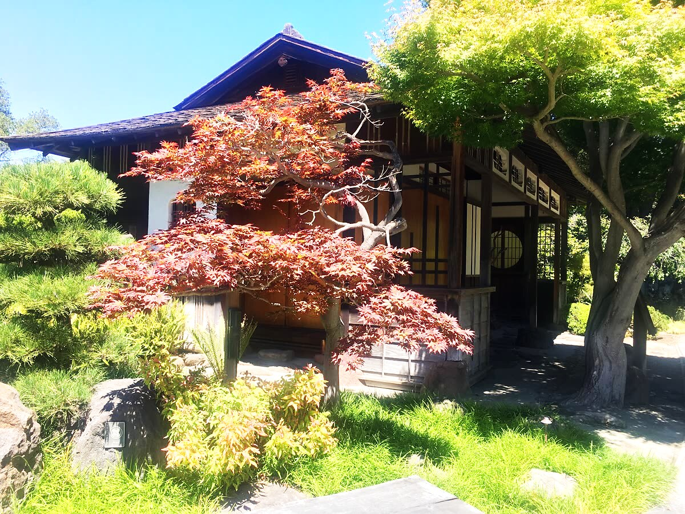
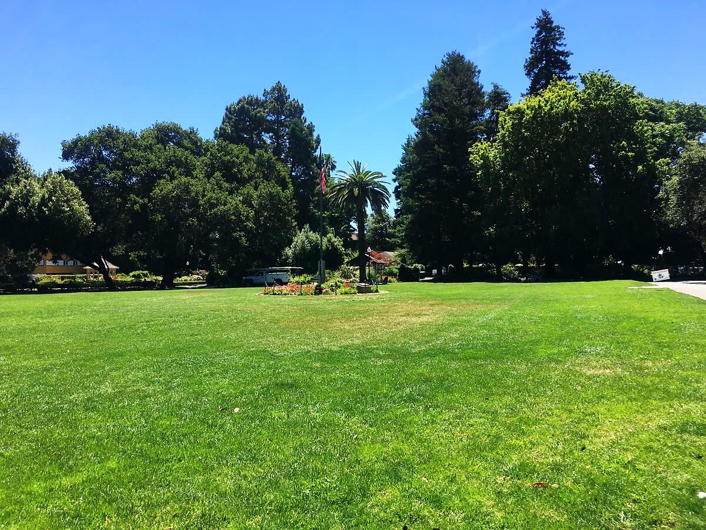
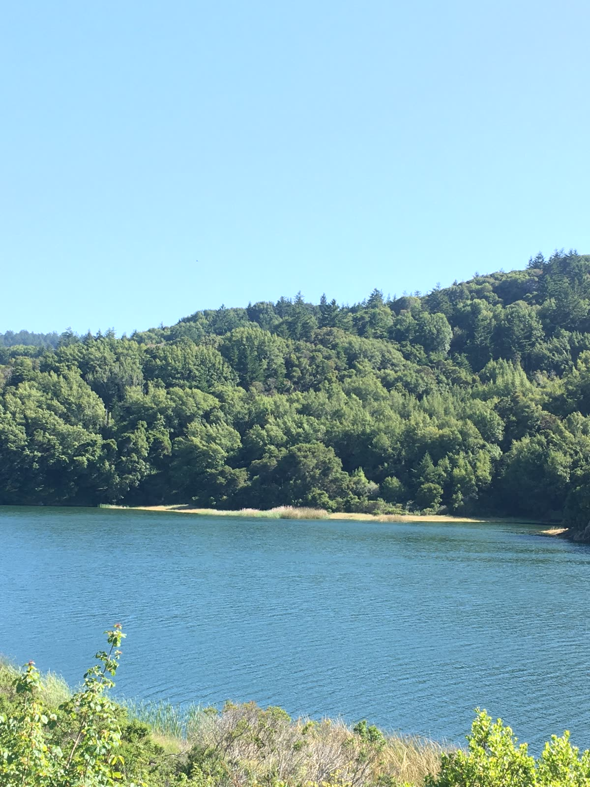

Porterhouse
The Peninsula's in-house dry-aging steakhouse.
Born and raised here. These are the restaurants, neighborhoods, hidden gems, and longtime favorites that make San Mateo feel like home, not just another place on the map.
New: looking for food, services, or something to do? Just ask, and get real local spots in seconds.



Since 1906 · Downtown San Mateo
A San Mateo treasure for well over a century. This family-run market is where locals go for Hawaiian and Japanese groceries, fresh poke, and Spam musubi, plus the hard-to-find pantry staples worth a special trip. If you haven't been, go hungry.
Since 1958 · Shoreview
San Mateo's oldest pizzeria has fed Shoreview families since 1958. This summer it came close to closing, and the neighborhood is the reason it's still open. Go grab a pie, order the Star of India or Manny's Favorite, and help keep a 68-year institution alive.
Brazilian Steakhouse · Downtown B Street
A proper Brazilian churrascaria on B Street, where servers move table to table carving skewered meats right onto your plate. It's all-you-can-eat rodizio, from picanha to garlic sirloin, with a big salad bar alongside. Come hungry and pace yourself.
Own a San Mateo spot? Get listed, free →
Deals, happy hours, new openings, and what's on around town right now. Own a spot? Add to the buzz →
The Peninsula's in-house dry-aging steakhouse.
All-you-can-eat rodizio, carved tableside.
Hawaiian and Japanese groceries, and Spam musubi worth the trip.
A family florist that has bloomed in San Mateo since 1933.
San Mateo's oldest pizzeria nearly closed this summer. The neighborhood is keeping it open, so go grab a pie. Read their story.
The makers market returns to B Street, 11am to 5pm, with local makers, crafters, artists, and food. Third Saturday of every month.
A free family and dog celebration at Fitzgerald Field, noon to 3pm, with dog contests, demos, pet-friendly vendors, and community resources. Presented by San Mateo PAL and Parks & Rec.
Meet adoptable pets with the Peninsula Humane Society & SPCA on B Street at 1st Ave, 1 to 3pm. You can start an adoption application on-site.
The Main Library marks 20 years with music, dance, and cultural performances, 11am to 3pm, plus the grand opening of PLUR Coffee's new third-floor cafe.
Live music, food, and family fun on B Street between 1st and 3rd, 6 to 8pm. Pure Ecstasy (Motown & R&B) on Sept 10, Neon Velvet (Top 40) on Sept 17, plus a kids zone.
A free day-long downtown celebration of art, music, dance, poetry, and food, with live mural painting, cultural performances, and local artists.
A former Sweet Maple chef turned the old Wursthall space into a 140-seat brunch spot with galbi eggs Benedict and gochujang cioppino.
The Palo Alto favorite's second location brings regional cooking from Oaxaca and the Yucatan, with a deep tequila list.
The Half Moon Bay brunch destination from the It's Italia team moved its full menu into the Brickline building.
A premium Japanese matcha bar pouring ceremonial-grade lattes in the heart of downtown.
An Iraqi-Palestinian coffee house serving sand-brewed Turkish coffee, cardamom lattes, and Middle Eastern sweets.
Old-school Italian with live jazz several nights a week.
Earned its 9th Michelin Bib Gourmand in 2026. Scratch-made Northern-Italian pastas and an all-Italian wine list.
A vibrant new mural by Leysar Garcia, winner of last years Mural Madness live-painting competition, funded by the county and downtown partners.
Weekly happy-hour specials on services at this downtown salon.
Downtown happy hour with drinks and Mexican plates.
Celebrating two years downtown with anniversary class specials.
Summer sale on frames and eyewear, running through August 15.
Trivia and karaoke kick off the week at McGovern's, O'Neill's, and Blue Moon Bar, then Friday brings a full downtown live-music lineup: jazz at B Street & Vine and A2 Wine Bar, Latin Night at Motion Arts Center, and Sean Daly & the Shams at O'Neill's.
Restaurants, coffee, happy hours, brunch, and the bakeries worth the line.
Coyote Point, Central Park's Japanese Garden, the Bay Trail, and where to take the dog.
A perfect Saturday, date nights, rainy days, and what to do with the kids.
The corners only locals know. No tourist traps, no filler.
The spots that have been here since the '80s and before. Nobody else is telling these stories.
Barbers, gyms, dentists, salons, and the vets locals actually trust.
Plumbers, electricians, roofers, and the home-service trades San Mateo homeowners actually call.
Think you know your hometown?
Explore by neighborhood
A local's guide to each corner of town, the spots and the stories behind them.
A hand-picked guide to the independent restaurants, the family-run shops, the barber who's been on the same corner for twenty years, the taco truck locals swear by. Not the chains you'll find in any city. The places that make this town feel like home. Every spot is checked by a person, not scraped by a machine.
There's even an Ask a Local guide you can talk to like a friend who knows the town. Tell it you need alterations, a plumber, or tacos near where you're standing, and it points you to the genuinely closest real spot.
Live here? A shortcut to the best of your own town, and a way to put your money into businesses run by your neighbors.
Just visiting? Skip the tourist traps and get the recommendations a local would actually give you.
Run a local business? This is where your neighbors come looking. See why to list →
I'm Jason, born and raised in San Mateo. My parents got their start in a small house on Idaho Street, and once my older siblings came along and the family needed more room, we settled on the Westside, in the last house on the block, the one that shared the corner with the 7-Eleven and the plumbing supply. I was born at Mills, went to Sunnybrae for kindergarten, then St. Matthew's from first through eighth (my first job, at fourteen, was answering their phones while I did my homework). We moved over to Shoreview in sixth grade, and I graduated from Aragon.
Being a kid here meant biking to Central Park for rec baseball, being a little too big for the kids' train, and grabbing a snow cone from the stand under the bleachers after. Birthday parties at Farrell's, the free birthday scoop at Baskin-Robbins on 3rd, Thrifty cones on B Street. Sundays fishing under the San Mateo Bridge with the family, or Bay Meadows with the cousins, cutting through the tunnel to the playground.
My second job was at the Peninsula Regent on Baldwin, busser to waiter to prep cook. Half the high school worked there back then, and I'm still friends with people I met on that job.
I never left, and I don't plan to. You'll still catch me on the Bay Trail off 3rd or grabbing a drink downtown at O'Neill's. That's the whole reason this guide exists. It's not an agency with a spreadsheet. It's a guy who grew up on these streets telling you where to actually go.
A tribute to the diners, the shops, and the family-run spots that have been part of San Mateo since the 1980s and before. The ones that outlasted every trend. No other guide is doing this.
🏛️ See the legacy spots still standing → Nominate a legacy spot Gone But Not Forgotten → 70 beloved San Mateo places that closed their doors but never left. Our tribute to the ones we lost."Some of these places don't even have a website. Find them the old-fashioned way. Just walk in."
This town looks like parks, taquerias, and Little League games, and it is. It's also where a surprising slice of the internet got its start, and where a lot of it still runs from today.
Not bad for a town most people just drive through on the way to somewhere else.
I was born and raised in San Mateo. I crawled out of Mills Hospital, knew which way to get to Talbot's Toyland from my street, and now know which "hidden gems" on the review sites are just tourist traps with good SEO.
This is my honest, regularly updated guide to the city I love. If it's listed here, I stand behind it. That's the whole promise.
— A San Mateo local
New spots, the weekend's best, and a legacy story or two. Free.
For business owners
Want more Google reviews, or a website that actually works? That's what we do for local businesses here. You can also grab a featured spot on the guide. We're local, and we'd love to help.
Let's talk Why list?For locals
Locals run this guide. Send us your favorite, a hidden gem, or a place that should be on here. Or snap a photo at one of your favorite spots, tag it and @sanmateolocal on Instagram, and we'll feature you in our locals' gallery.
Suggest a spot